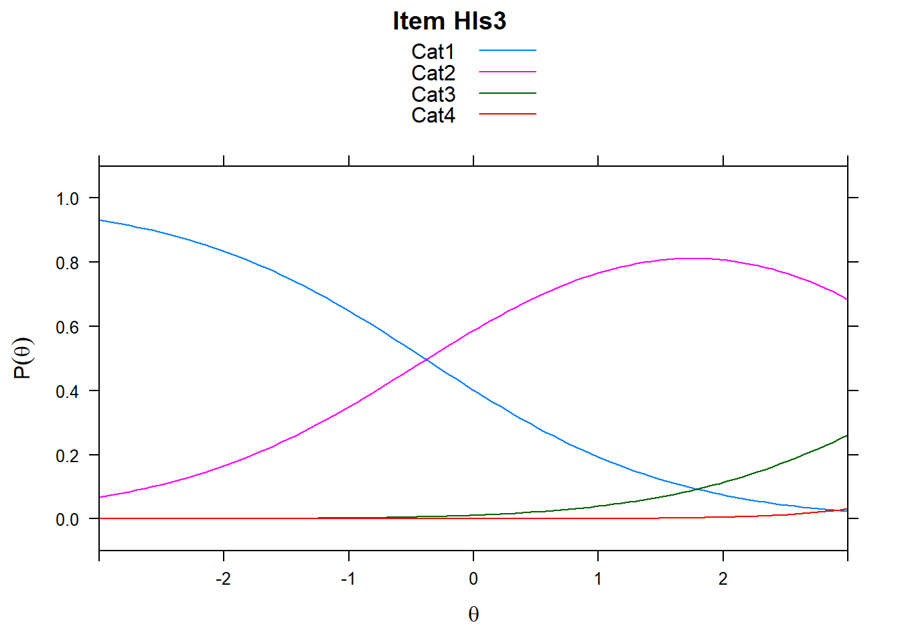
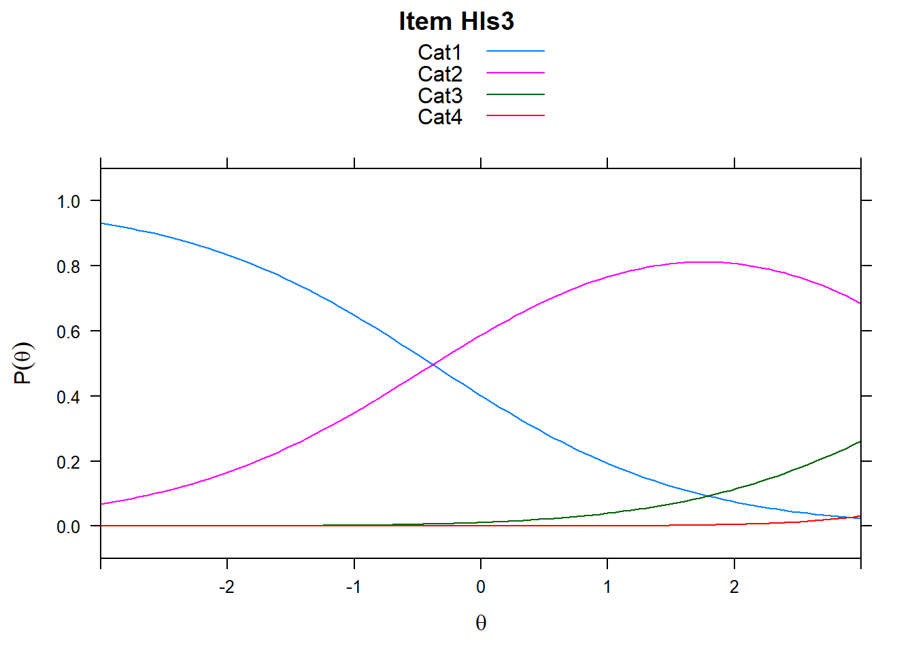

Chapter 8 Polytomous Items
8.1 Polytymous item types (anything with a rating Scale)
We can use the Rasch Partial Credit Model (PCM) to look at polytomous data too. We’ll start by bringing in the polytomous items from the survey. Note that TAM needs the bottom category to be coded as 0, so you may need to recode.
hls2 <- read.csv("hls_poly_scale.csv")We see these items are coded with four categories. And the categories are fairly sparse in the 4 fourth category (coded 3, since indexed starting with 0). This may be motivation to collapse categories.
head(hls2)## Hls1 Hls2 Hls3 Hls4 Hls5 Hls6 Hls7 Hls8 Hls9 Hls10 Hls11
## 1 1 1 1 0 1 1 0 2 1 1 2
## 2 2 1 1 1 2 1 1 2 1 1 2
## 3 0 1 1 1 1 1 1 2 1 0 1
## 4 1 1 0 0 2 1 0 1 0 0 2
## 5 1 1 0 0 1 0 0 2 0 0 2
## 6 1 1 1 1 2 1 1 1 1 0 2
## Hls12 Hls13 Hls14 Hls15 Hls16
## 1 1 1 0 1 1
## 2 2 2 1 1 2
## 3 2 1 1 1 1
## 4 1 1 1 2 1
## 5 2 2 1 1 2
## 6 2 2 1 2 1apply(hls2, 2, table)## Hls1 Hls2 Hls3 Hls4 Hls5 Hls6 Hls7 Hls8 Hls9 Hls10 Hls11
## 0 63 76 129 160 65 90 140 50 146 139 47
## 1 204 207 176 148 166 196 162 154 144 163 116
## 2 44 32 11 7 78 26 12 101 21 13 130
## 3 6 2 1 2 8 5 3 12 6 2 24
## Hls12 Hls13 Hls14 Hls15 Hls16
## 0 44 52 64 52 69
## 1 138 176 181 148 185
## 2 119 83 60 105 57
## 3 16 6 12 12 6View(hls2)TAM will automatically run the PCM when our data is polytomous. There are other model-types for polytomous data such as the rating scale model. This may be more appropriate for Likert-type items. For more information, read TAM documentation or see the reference list (Bond & Fox, 2007)
mod2 <- tam(hls2)summary(mod2)## ------------------------------------------------------------
## TAM 3.5-19 (2020-05-05 22:45:39)
## R version 3.6.0 (2019-04-26) x86_64, mingw32 | nodename=LAPTOP-K7402PLE | login=katzd
##
## Date of Analysis: 2021-02-07 11:36:51
## Time difference of 0.256979 secs
## Computation time: 0.256979
##
## Multidimensional Item Response Model in TAM
##
## IRT Model: 1PL
## Call:
## tam.mml(resp = resp)
##
## ------------------------------------------------------------
## Number of iterations = 57
## Numeric integration with 21 integration points
##
## Deviance = 8371.25
## Log likelihood = -4185.63
## Number of persons = 317
## Number of persons used = 317
## Number of items = 16
## Number of estimated parameters = 49
## Item threshold parameters = 48
## Item slope parameters = 0
## Regression parameters = 0
## Variance/covariance parameters = 1
##
## AIC = 8469 | penalty=98 | AIC=-2*LL + 2*p
## AIC3 = 8518 | penalty=147 | AIC3=-2*LL + 3*p
## BIC = 8653 | penalty=282.19 | BIC=-2*LL + log(n)*p
## aBIC = 8497 | penalty=126.15 | aBIC=-2*LL + log((n-2)/24)*p (adjusted BIC)
## CAIC = 8702 | penalty=331.19 | CAIC=-2*LL + [log(n)+1]*p (consistent AIC)
## AICc = 8488 | penalty=116.35 | AICc=-2*LL + 2*p + 2*p*(p+1)/(n-p-1) (bias corrected AIC)
## GHP = 0.8349 | GHP=( -LL + p ) / (#Persons * #Items) (Gilula-Haberman log penalty)
##
## ------------------------------------------------------------
## EAP Reliability
## [1] 0.914
## ------------------------------------------------------------
## Covariances and Variances
## [,1]
## [1,] 2.615
## ------------------------------------------------------------
## Correlations and Standard Deviations (in the diagonal)
## [,1]
## [1,] 1.617
## ------------------------------------------------------------
## Regression Coefficients
## [,1]
## [1,] 0
## ------------------------------------------------------------
## Item Parameters -A*Xsi
## item N M xsi.item AXsi_.Cat1 AXsi_.Cat2
## 1 Hls1 317 0.978 1.427 -1.846 0.452
## 2 Hls2 317 0.874 2.074 -1.502 1.263
## 3 Hls3 317 0.634 2.903 -0.381 3.581
## 4 Hls4 317 0.530 2.809 0.176 4.500
## 5 Hls5 317 1.091 1.198 -1.684 -0.302
## 6 Hls6 317 0.830 1.818 -1.155 1.784
## 7 Hls7 317 0.615 2.455 -0.166 3.587
## 8 Hls8 317 1.237 0.781 -2.136 -1.239
## 9 Hls9 317 0.644 2.098 -0.008 2.982
## 10 Hls10 317 0.615 2.630 -0.183 3.511
## 11 Hls11 317 1.413 0.325 -2.106 -1.934
## 12 Hls12 317 1.338 0.512 -2.318 -1.805
## 13 Hls13 317 1.136 1.162 -2.127 -0.789
## 14 Hls14 317 1.063 1.070 -1.762 0.000
## 15 Hls15 317 1.243 0.792 -2.043 -1.232
## 16 Hls16 317 1.000 1.434 -1.629 0.278
## AXsi_.Cat3 B.Cat1.Dim1 B.Cat2.Dim1 B.Cat3.Dim1
## 1 4.282 1 2 3
## 2 6.221 1 2 3
## 3 8.709 1 2 3
## 4 8.428 1 2 3
## 5 3.595 1 2 3
## 6 5.455 1 2 3
## 7 7.364 1 2 3
## 8 2.342 1 2 3
## 9 6.295 1 2 3
## 10 7.890 1 2 3
## 11 0.974 1 2 3
## 12 1.537 1 2 3
## 13 3.487 1 2 3
## 14 3.209 1 2 3
## 15 2.376 1 2 3
## 16 4.303 1 2 3
##
## Item Parameters Xsi
## xsi se.xsi
## Hls1_Cat1 -1.846 0.177
## Hls1_Cat2 2.298 0.174
## Hls1_Cat3 3.830 0.464
## Hls2_Cat1 -1.502 0.164
## Hls2_Cat2 2.765 0.200
## Hls2_Cat3 4.958 0.780
## Hls3_Cat1 -0.381 0.138
## Hls3_Cat2 3.962 0.321
## Hls3_Cat3 5.127 1.117
## Hls4_Cat1 0.176 0.133
## Hls4_Cat2 4.325 0.378
## Hls4_Cat3 3.927 0.853
## Hls5_Cat1 -1.684 0.178
## Hls5_Cat2 1.382 0.147
## Hls5_Cat3 3.897 0.394
## Hls6_Cat1 -1.155 0.154
## Hls6_Cat2 2.939 0.211
## Hls6_Cat3 3.671 0.519
## Hls7_Cat1 -0.166 0.136
## Hls7_Cat2 3.753 0.295
## Hls7_Cat3 3.776 0.689
## Hls8_Cat1 -2.136 0.199
## Hls8_Cat2 0.897 0.139
## Hls8_Cat3 3.581 0.324
## Hls9_Cat1 -0.008 0.136
## Hls9_Cat2 2.990 0.229
## Hls9_Cat3 3.313 0.482
## Hls10_Cat1 -0.183 0.136
## Hls10_Cat2 3.695 0.292
## Hls10_Cat3 4.379 0.822
## Hls11_Cat1 -2.106 0.210
## Hls11_Cat2 0.173 0.138
## Hls11_Cat3 2.907 0.235
## Hls12_Cat1 -2.318 0.212
## Hls12_Cat2 0.513 0.136
## Hls12_Cat3 3.342 0.282
## Hls13_Cat1 -2.127 0.194
## Hls13_Cat2 1.339 0.144
## Hls13_Cat3 4.276 0.449
## Hls14_Cat1 -1.761 0.178
## Hls14_Cat2 1.762 0.155
## Hls14_Cat3 3.208 0.331
## Hls15_Cat1 -2.042 0.197
## Hls15_Cat2 0.810 0.138
## Hls15_Cat3 3.609 0.323
## Hls16_Cat1 -1.629 0.172
## Hls16_Cat2 1.907 0.160
## Hls16_Cat3 4.025 0.457
##
## Item Parameters in IRT parameterization
## item alpha beta tau.Cat1 tau.Cat2 tau.Cat3
## 1 Hls1 1 1.427 -3.274 0.871 2.403
## 2 Hls2 1 2.074 -3.575 0.691 2.885
## 3 Hls3 1 2.903 -3.284 1.059 2.224
## 4 Hls4 1 2.809 -2.633 1.515 1.118
## 5 Hls5 1 1.198 -2.883 0.184 2.699
## 6 Hls6 1 1.818 -2.974 1.121 1.853
## 7 Hls7 1 2.455 -2.620 1.299 1.322
## 8 Hls8 1 0.781 -2.917 0.116 2.800
## 9 Hls9 1 2.098 -2.106 0.891 1.215
## 10 Hls10 1 2.630 -2.814 1.065 1.749
## 11 Hls11 1 0.325 -2.431 -0.152 2.583
## 12 Hls12 1 0.512 -2.830 0.001 2.830
## 13 Hls13 1 1.162 -3.290 0.176 3.113
## 14 Hls14 1 1.070 -2.831 0.692 2.139
## 15 Hls15 1 0.792 -2.835 0.018 2.816
## 16 Hls16 1 1.434 -3.063 0.472 2.5908.2 Item Difficulties
Now we’ll get item and person characteristics just like before.
TAM also uses the delta-tau paramaterization of the partial credit model as default. The problem is, we may be curious about the thresholds (cumulative), the overall item difficulty, and steps. TAM provides this all but it’s not straightforward.
# Deltas
xsi <- mod2$xsi
# get thresholds - Thurstone Thresholds get the cumulative values
tthresh <- tam.threshold(mod2)
# Delta-tau parameters
delta_tau <- mod2$item_irt
# we have to do some addition...
xsi## xsi se.xsi
## Hls1_Cat1 -1.846046710 0.1770841
## Hls1_Cat2 2.298334842 0.1736858
## Hls1_Cat3 3.830385868 0.4635448
## Hls2_Cat1 -1.501715752 0.1640914
## Hls2_Cat2 2.764560868 0.2004621
## Hls2_Cat3 4.958324889 0.7804292
## Hls3_Cat1 -0.380834628 0.1378983
## Hls3_Cat2 3.962213547 0.3205437
## Hls3_Cat3 5.127428610 1.1165768
## Hls4_Cat1 0.175976124 0.1331498
## Hls4_Cat2 4.324558567 0.3775359
## Hls4_Cat3 3.927492901 0.8526291
## Hls5_Cat1 -1.684131262 0.1781274
## Hls5_Cat2 1.381933373 0.1467223
## Hls5_Cat3 3.897482578 0.3943440
## Hls6_Cat1 -1.155351142 0.1543659
## Hls6_Cat2 2.939344680 0.2113184
## Hls6_Cat3 3.671463609 0.5189345
## Hls7_Cat1 -0.165823435 0.1358793
## Hls7_Cat2 3.753328170 0.2949727
## Hls7_Cat3 3.776319530 0.6885511
## Hls8_Cat1 -2.135935885 0.1992731
## Hls8_Cat2 0.896643565 0.1385362
## Hls8_Cat3 3.581083599 0.3235907
## Hls9_Cat1 -0.008019089 0.1360316
## Hls9_Cat2 2.989853095 0.2288433
## Hls9_Cat3 3.313295753 0.4819018
## Hls10_Cat1 -0.183297684 0.1360561
## Hls10_Cat2 3.694746057 0.2921816
## Hls10_Cat3 4.379242422 0.8215605
## Hls11_Cat1 -2.106058995 0.2097751
## Hls11_Cat2 0.172650186 0.1377271
## Hls11_Cat3 2.907183948 0.2353937
## Hls12_Cat1 -2.317865929 0.2117123
## Hls12_Cat2 0.513325662 0.1362435
## Hls12_Cat3 3.342199604 0.2821645
## Hls13_Cat1 -2.127336182 0.1938394
## Hls13_Cat2 1.338677184 0.1444056
## Hls13_Cat3 4.275574749 0.4493420
## Hls14_Cat1 -1.761463128 0.1777770
## Hls14_Cat2 1.762102813 0.1550751
## Hls14_Cat3 3.208316423 0.3314447
## Hls15_Cat1 -2.042459839 0.1969236
## Hls15_Cat2 0.810466042 0.1380178
## Hls15_Cat3 3.608588261 0.3230206
## Hls16_Cat1 -1.628691156 0.1721913
## Hls16_Cat2 1.906727817 0.1604086
## Hls16_Cat3 4.024764112 0.4574405delta_tau## item alpha beta tau.Cat1 tau.Cat2 tau.Cat3
## 1 Hls1 1 1.4274710 -3.273603 0.8707754118 2.402828
## 2 Hls2 1 2.0736329 -3.575436 0.6908361981 2.884600
## 3 Hls3 1 2.9028463 -3.283771 1.0592759982 2.224495
## 4 Hls4 1 2.8092628 -2.633376 1.5152150567 1.118161
## 5 Hls5 1 1.1983411 -2.882556 0.1835035073 2.699053
## 6 Hls6 1 1.8184015 -2.973840 1.1208578911 1.852982
## 7 Hls7 1 2.4545273 -2.620439 1.2987189037 1.321721
## 8 Hls8 1 0.7805103 -2.916528 0.1160446178 2.800483
## 9 Hls9 1 2.0983006 -2.106406 0.8914751897 1.214930
## 10 Hls10 1 2.6301446 -2.813531 1.0645139316 1.749018
## 11 Hls11 1 0.3245074 -2.430645 -0.1519433803 2.582588
## 12 Hls12 1 0.5124669 -2.830413 0.0007705277 2.829642
## 13 Hls13 1 1.1622166 -3.289636 0.1763701702 3.113266
## 14 Hls14 1 1.0695679 -2.831114 0.6924494287 2.138665
## 15 Hls15 1 0.7921115 -2.834653 0.0182660931 2.816387
## 16 Hls16 1 1.4341793 -3.062956 0.4724593127 2.590496mod2$item #PCM2 type parameteris## item N M xsi.item AXsi_.Cat1
## Hls1 Hls1 317 0.9779180 1.4274710 -1.846131898
## Hls2 Hls2 317 0.8738170 2.0736329 -1.501802830
## Hls3 Hls3 317 0.6340694 2.9028463 -0.380924234
## Hls4 Hls4 317 0.5299685 2.8092628 0.175886380
## Hls5 Hls5 317 1.0914826 1.1983411 -1.684215070
## Hls6 Hls6 317 0.8296530 1.8184015 -1.155438051
## Hls7 Hls7 317 0.6151420 2.4545273 -0.165912194
## Hls8 Hls8 317 1.2365931 0.7805103 -2.136017661
## Hls9 Hls9 317 0.6435331 2.0983006 -0.008105079
## Hls10 Hls10 317 0.6151420 2.6301446 -0.183386855
## Hls11 Hls11 317 1.4132492 0.3245074 -2.106137069
## Hls12 Hls12 317 1.3375394 0.5124669 -2.317946089
## Hls13 Hls13 317 1.1356467 1.1622166 -2.127419718
## Hls14 Hls14 317 1.0630915 1.0695679 -1.761546575
## Hls15 Hls15 317 1.2429022 0.7921115 -2.042541519
## Hls16 Hls16 317 1.0000000 1.4341793 -1.628776280
## AXsi_.Cat2 AXsi_.Cat3 B.Cat1.Dim1 B.Cat2.Dim1
## Hls1 0.4521145624 4.2824131 1 2
## Hls2 1.2626663181 6.2208988 1 2
## Hls3 3.5811980586 8.7085389 1 2
## Hls4 4.5003642315 8.4277884 1 2
## Hls5 -0.3023704998 3.5950232 1 2
## Hls6 1.7838213033 5.4552044 1 2
## Hls7 3.5873340076 7.3635819 1 2
## Hls8 -1.2394627171 2.3415310 1 2
## Hls9 2.9816706902 6.2949017 1 2
## Hls10 3.5112716780 7.8904338 1 2
## Hls11 -1.9335729998 0.9735223 1 2
## Hls12 -1.8047086322 1.5374008 1 2
## Hls13 -0.7888329123 3.4866499 1 2
## Hls14 0.0004707108 3.2087036 1 2
## Hls15 -1.2321639435 2.3763344 1 2
## Hls16 0.2778623406 4.3025379 1 2
## B.Cat3.Dim1
## Hls1 3
## Hls2 3
## Hls3 3
## Hls4 3
## Hls5 3
## Hls6 3
## Hls7 3
## Hls8 3
## Hls9 3
## Hls10 3
## Hls11 3
## Hls12 3
## Hls13 3
## Hls14 3
## Hls15 3
## Hls16 3#note, if you want to see this in your viewer, you can also use View().Going between the different parameterizations:
First, look at xsi Hls1 categories. As a reminder, the item has 4 categories, thus three thresholds. We see, that: -1.8460467, 2.2983348, 3.8303859 gives us deltas/steps for the first the three steps of Hls1.
Now, look at the first row of delta_tau. The value 1.427471 gives us the item difficulty. The tau values, are-3.2736029, 0.8707754, 2.4028275 Believe it or not, this gives us the same information as xsi above. How, so?
delta_tau <- delta_tau %>%
mutate(HLS_cat1 = beta + tau.Cat1,
HLS_cat2 = beta + tau.Cat2,
HLS_cat3 = beta + tau.Cat3)
delta_tau## item alpha beta tau.Cat1 tau.Cat2 tau.Cat3
## 1 Hls1 1 1.4274710 -3.273603 0.8707754118 2.402828
## 2 Hls2 1 2.0736329 -3.575436 0.6908361981 2.884600
## 3 Hls3 1 2.9028463 -3.283771 1.0592759982 2.224495
## 4 Hls4 1 2.8092628 -2.633376 1.5152150567 1.118161
## 5 Hls5 1 1.1983411 -2.882556 0.1835035073 2.699053
## 6 Hls6 1 1.8184015 -2.973840 1.1208578911 1.852982
## 7 Hls7 1 2.4545273 -2.620439 1.2987189037 1.321721
## 8 Hls8 1 0.7805103 -2.916528 0.1160446178 2.800483
## 9 Hls9 1 2.0983006 -2.106406 0.8914751897 1.214930
## 10 Hls10 1 2.6301446 -2.813531 1.0645139316 1.749018
## 11 Hls11 1 0.3245074 -2.430645 -0.1519433803 2.582588
## 12 Hls12 1 0.5124669 -2.830413 0.0007705277 2.829642
## 13 Hls13 1 1.1622166 -3.289636 0.1763701702 3.113266
## 14 Hls14 1 1.0695679 -2.831114 0.6924494287 2.138665
## 15 Hls15 1 0.7921115 -2.834653 0.0182660931 2.816387
## 16 Hls16 1 1.4341793 -3.062956 0.4724593127 2.590496
## HLS_cat1 HLS_cat2 HLS_cat3
## 1 -1.846131898 2.2982465 3.830299
## 2 -1.501802830 2.7644691 4.958233
## 3 -0.380924234 3.9621223 5.127341
## 4 0.175886380 4.3244779 3.927424
## 5 -1.684215070 1.3818446 3.897394
## 6 -1.155438051 2.9392594 3.671383
## 7 -0.165912194 3.7532462 3.776248
## 8 -2.136017661 0.8965549 3.580994
## 9 -0.008105079 2.9897758 3.313231
## 10 -0.183386855 3.6946585 4.379162
## 11 -2.106137069 0.1725641 2.907095
## 12 -2.317946089 0.5132375 3.342109
## 13 -2.127419718 1.3385868 4.275483
## 14 -1.761546575 1.7620173 3.208233
## 15 -2.042541519 0.8103776 3.608498
## 16 -1.628776280 1.9066386 4.024676Note, now, that, that the delta_tau “item difficulty” (or beta) + tau gets you back to the estimates of xsi
This is the difference between two different parameterization in the PCM model. One parametrization is: \[P(X_{si} = x) = \frac{exp[\sum_{k=0}^x(\theta_s-\delta_{ik})]}{\sum_{h=0}^{m_i}exp[\sum_{k=0}^h(\theta_s-\delta_{ik})]}\].
This is roughly what you’re seeing for the xsi estimates. Here, k indexes item category, \(\delta\) is the item, s indexes student.
The other parameterization, delta_tau, helps us nicely transition to the Rating Scale model, showing that the Rating Scale Model is a special case of the PCM.
\[P(X_{si} = x) = \frac{exp[\sum_{k=0}^x(\theta_s-\delta_{i}+\tau_{ik})]}{\sum_{h=0}^{m_i}exp[\sum_{k=0}^h(\theta_s-\delta_{i} + \tau_{ik})]}\].
Here, \(\delta_i\) is the item, and \(\tau\) is the item category. In the PCM, the is item specific, it’s the “jump” of the category from the overall item difficulty.
In the rating scale model, the delta_tau parameterization is used, but each is the same, or, at leas, each deviance amount is the same.
The parameterization in mod2 item lets you go between different parameterizations if you so choose. For instance, mod2$item gives you an xsi.item column that is the item difficulty in the PCM2 parameterizations. The AXsi_.Cat# items are the sums of the xsi delta/step parameters up to that step.
8.3 Person ability (theta) estimates
WLE.ability.poly <- tam.wle(mod2)## Iteration in WLE/MLE estimation 1 | Maximal change 2.6967
## Iteration in WLE/MLE estimation 2 | Maximal change 2.1777
## Iteration in WLE/MLE estimation 3 | Maximal change 0.368
## Iteration in WLE/MLE estimation 4 | Maximal change 0.0135
## Iteration in WLE/MLE estimation 5 | Maximal change 3e-04
## Iteration in WLE/MLE estimation 6 | Maximal change 0
## ----
## WLE Reliability= 0.9person.ability.poly <- WLE.ability.poly$theta
head(person.ability.poly)## [1] 0.07670224 1.74460893 0.29326740 -0.14106713
## [5] 0.07670224 1.143694918.4 Item fit statistics
The rest of the workflow from here now is pretty similar with a few different challenges
We need to get infit and outfit (mean square) for each item. Only now it’ll be by item category.
Fit.poly <- tam.fit(mod2)## Item fit calculation based on 100 simulations
## |**********|
## |----------|Fit.poly$itemfitkable(Fit.poly$itemfit)| parameter | Outfit | Outfit_t | Outfit_p | Outfit_pholm | Infit | Infit_t | Infit_p | Infit_pholm |
|---|---|---|---|---|---|---|---|---|
| Hls1_Cat1 | 3.0439335 | 11.4187762 | 0.0000000 | 0.0000000 | 1.0313860 | 0.3150890 | 0.7526941 | 1 |
| Hls1_Cat2 | 3.8472877 | 14.2802477 | 0.0000000 | 0.0000000 | 1.1243041 | 1.2002557 | 0.2300401 | 1 |
| Hls1_Cat3 | 3841.5471968 | 84.9774976 | 0.0000000 | 0.0000000 | 0.9566579 | 0.0017079 | 0.9986373 | 1 |
| Hls2_Cat1 | 27.8281551 | 51.4499262 | 0.0000000 | 0.0000000 | 1.0711516 | 0.7431333 | 0.4574010 | 1 |
| Hls2_Cat2 | 0.9317189 | -0.5148869 | 0.6066321 | 1.0000000 | 1.0420203 | 0.3491282 | 0.7269931 | 1 |
| Hls2_Cat3 | 0.8007581 | -0.3150209 | 0.7527458 | 1.0000000 | 1.4060785 | 0.7790337 | 0.4359599 | 1 |
| Hls3_Cat1 | 0.9309129 | -1.1110776 | 0.2665350 | 1.0000000 | 0.9618953 | -0.5925058 | 0.5535120 | 1 |
| Hls3_Cat2 | 0.8311972 | -0.6579216 | 0.5105885 | 1.0000000 | 0.9070840 | -0.2870984 | 0.7740369 | 1 |
| Hls3_Cat3 | 0.0135733 | -2.4977338 | 0.0124990 | 0.3249740 | 0.8332008 | 0.0181162 | 0.9855462 | 1 |
| Hls4_Cat1 | 0.8666090 | -2.5628405 | 0.0103820 | 0.2906952 | 0.9317082 | -1.2692045 | 0.2043681 | 1 |
| Hls4_Cat2 | 0.6807087 | -1.1542441 | 0.2484001 | 1.0000000 | 0.8803138 | -0.3018424 | 0.7627722 | 1 |
| Hls4_Cat3 | 0.0100432 | -3.4506261 | 0.0005593 | 0.0195751 | 0.3910604 | -1.0818346 | 0.2793260 | 1 |
| Hls5_Cat1 | 0.8489802 | -1.6008439 | 0.1094115 | 1.0000000 | 0.8397601 | -1.5353651 | 0.1246942 | 1 |
| Hls5_Cat2 | 1.5933764 | 6.6898502 | 0.0000000 | 0.0000000 | 1.0830227 | 1.2109313 | 0.2259217 | 1 |
| Hls5_Cat3 | 1.9617694 | 2.1197248 | 0.0340293 | 0.7826729 | 1.0713049 | 0.3166594 | 0.7515021 | 1 |
| Hls6_Cat1 | 0.9375763 | -0.7614531 | 0.4463865 | 1.0000000 | 0.8684791 | -1.5805556 | 0.1139797 | 1 |
| Hls6_Cat2 | 1.3110188 | 1.8778416 | 0.0604028 | 1.0000000 | 1.0117370 | 0.1220608 | 0.9028508 | 1 |
| Hls6_Cat3 | 2.8746737 | 2.7517809 | 0.0059272 | 0.1778165 | 1.3038619 | 0.7950537 | 0.4265822 | 1 |
| Hls7_Cat1 | 0.8307029 | -3.0064944 | 0.0026428 | 0.0872120 | 0.9098831 | -1.5401877 | 0.1235146 | 1 |
| Hls7_Cat2 | 0.5216551 | -2.5230863 | 0.0116330 | 0.3140906 | 0.8911898 | -0.4227159 | 0.6725025 | 1 |
| Hls7_Cat3 | 0.5794161 | -1.0636274 | 0.2874975 | 1.0000000 | 1.1639083 | 0.4464487 | 0.6552732 | 1 |
| Hls8_Cat1 | 0.6534279 | -3.1949251 | 0.0013987 | 0.0475548 | 0.8481621 | -1.2445071 | 0.2133130 | 1 |
| Hls8_Cat2 | 2.3566135 | 14.5831307 | 0.0000000 | 0.0000000 | 1.0773659 | 1.3250409 | 0.1851576 | 1 |
| Hls8_Cat3 | 1.3986397 | 1.2172932 | 0.2234927 | 1.0000000 | 0.9488540 | -0.1270301 | 0.8989166 | 1 |
| Hls9_Cat1 | 0.8846971 | -2.0481504 | 0.0405453 | 0.8601289 | 0.9513439 | -0.8297995 | 0.4066522 | 1 |
| Hls9_Cat2 | 1.4632995 | 2.4422450 | 0.0145962 | 0.3649059 | 1.0826504 | 0.5580785 | 0.5767908 | 1 |
| Hls9_Cat3 | 0.8921177 | -0.5774570 | 0.5636308 | 1.0000000 | 0.9342302 | -0.0592753 | 0.9527328 | 1 |
| Hls10_Cat1 | 1.0301790 | 0.4837050 | 0.6285952 | 1.0000000 | 1.0163222 | 0.2821701 | 0.7778131 | 1 |
| Hls10_Cat2 | 119.2297013 | 42.5932611 | 0.0000000 | 0.0000000 | 1.1400455 | 0.6562578 | 0.5116583 | 1 |
| Hls10_Cat3 | 0.4708052 | -1.0633617 | 0.2876180 | 1.0000000 | 1.0179819 | 0.2263507 | 0.8209287 | 1 |
| Hls11_Cat1 | 0.7835965 | -2.0631670 | 0.0390968 | 0.8601289 | 0.8623912 | -1.0699041 | 0.2846625 | 1 |
| Hls11_Cat2 | 0.9261580 | -1.3217757 | 0.1862429 | 1.0000000 | 1.0159972 | 0.2851401 | 0.7755368 | 1 |
| Hls11_Cat3 | 3.3679284 | 5.7186816 | 0.0000000 | 0.0000004 | 0.9946603 | 0.0148465 | 0.9881546 | 1 |
| Hls12_Cat1 | 0.6713411 | -2.9300870 | 0.0033887 | 0.1084375 | 0.7263598 | -2.2332983 | 0.0255293 | 1 |
| Hls12_Cat2 | 1.0696493 | 0.9459401 | 0.3441791 | 1.0000000 | 0.9903795 | -0.1631844 | 0.8703733 | 1 |
| Hls12_Cat3 | 5.6372690 | 7.1743702 | 0.0000000 | 0.0000000 | 1.0366887 | 0.2332915 | 0.8155351 | 1 |
| Hls13_Cat1 | 0.9134777 | -0.8489833 | 0.3958906 | 1.0000000 | 0.7663847 | -2.0487006 | 0.0404914 | 1 |
| Hls13_Cat2 | 1.0132565 | 0.1922261 | 0.8475651 | 1.0000000 | 1.0597572 | 0.9118795 | 0.3618321 | 1 |
| Hls13_Cat3 | 2.3359886 | 2.1556209 | 0.0311133 | 0.7467187 | 0.8977504 | -0.1660076 | 0.8681509 | 1 |
| Hls14_Cat1 | 0.8147296 | -1.8327667 | 0.0668373 | 1.0000000 | 0.9103947 | -0.8197424 | 0.4123630 | 1 |
| Hls14_Cat2 | 2.1728088 | 10.0546321 | 0.0000000 | 0.0000000 | 1.0805920 | 1.0198680 | 0.3077911 | 1 |
| Hls14_Cat3 | 0.6117242 | -1.8749118 | 0.0608049 | 1.0000000 | 0.9732229 | -0.0353880 | 0.9717704 | 1 |
| Hls15_Cat1 | 0.6937713 | -2.8783037 | 0.0039982 | 0.1239442 | 0.8057344 | -1.6561192 | 0.0976977 | 1 |
| Hls15_Cat2 | 1.1198943 | 1.9878822 | 0.0468247 | 0.9364944 | 1.0737999 | 1.2807554 | 0.2002796 | 1 |
| Hls15_Cat3 | 9.7829931 | 8.2016304 | 0.0000000 | 0.0000000 | 0.9590226 | -0.0868480 | 0.9307924 | 1 |
| Hls16_Cat1 | 1.5155241 | 4.1755381 | 0.0000297 | 0.0010702 | 0.9477807 | -0.4835234 | 0.6287242 | 1 |
| Hls16_Cat2 | 1.8796393 | 7.8654274 | 0.0000000 | 0.0000000 | 1.0633908 | 0.7504951 | 0.4529566 | 1 |
| Hls16_Cat3 | 0.2987204 | -2.7048792 | 0.0068329 | 0.1981547 | 0.8146684 | -0.4158382 | 0.6775284 | 1 |
8.5 Item characteristic curves (but now as thresholds).
There are item characteristic curves (ICCs) for each item choice
tthresh.poly <- tam.threshold(mod2)
plot(mod2, type = "items")## Iteration in WLE/MLE estimation 1 | Maximal change 2.6967
## Iteration in WLE/MLE estimation 2 | Maximal change 2.1777
## Iteration in WLE/MLE estimation 3 | Maximal change 0.368
## Iteration in WLE/MLE estimation 4 | Maximal change 0.0135
## Iteration in WLE/MLE estimation 5 | Maximal change 3e-04
## Iteration in WLE/MLE estimation 6 | Maximal change 0
## ----
## WLE Reliability= 0.9 



## ....................................................
## Plots exported in png format into folder:
## C:/Users/katzd/Desktop/Rprojects/Rasch_BIOME/DBER_Rasch-data/Plots8.6 Wright Map
Here’s a polytomous Wright Map
wrightMap(person.ability.poly, tthresh.poly)
## Cat1 Cat2 Cat3
## Hls1 -1.86154175 2.1462708 3.998566
## Hls2 -1.51547241 2.6820374 5.054901
## Hls3 -0.39358521 3.7526550 5.350800
## Hls4 0.16012573 3.7458801 4.529205
## Hls5 -1.72787476 1.3532410 3.970184
## Hls6 -1.17178345 2.6529236 3.976410
## Hls7 -0.18539429 3.3007507 4.254547
## Hls8 -2.18106079 0.8795471 3.643341
## Hls9 -0.05612183 2.6443176 3.715851
## Hls10 -0.20352173 3.4025574 4.694550
## Hls11 -2.19607544 0.2026062 2.966949
## Hls12 -2.37240601 0.5131531 3.396881
## Hls13 -2.15725708 1.3193665 4.324860
## Hls14 -1.78994751 1.6114197 3.388824
## Hls15 -2.09591675 0.8077698 3.664764
## Hls16 -1.65664673 1.8318787 4.1280218.7 Exercises:
- Find an item for which Cat 3 is actually easier than the Cat 2 of another item.
- Find an item that has two categories that are extremely close in severity.
- Look at the ICC for item 14. Describe what is happening with Cat 3.
8.8 Model Comparison
say we want to compare the two models we just ran (note, these aren’t really comparable since it’s a completely different model - not nested data)
logLik(mod1)## 'log Lik.' -7343.562 (df=16)logLik(mod2)## 'log Lik.' -4185.626 (df=49)anova(mod1, mod2)## Model loglike Deviance Npars AIC BIC
## 1 mod1 -7343.562 14687.124 16 14719.124 14797.649
## 2 mod2 -4185.626 8371.252 49 8469.252 8653.438
## Chisq df p
## 1 6315.872 33 0
## 2 NA NA NALog likelihood is the foundation of both AIC and BIC. AIC and BIC allow you to compare non-nested models while penalizing for model complexity (BIC penalizes more). In general, the model with a smaller AIC/BIC is the one that the data fit better. The two criteria sometimes disagree.